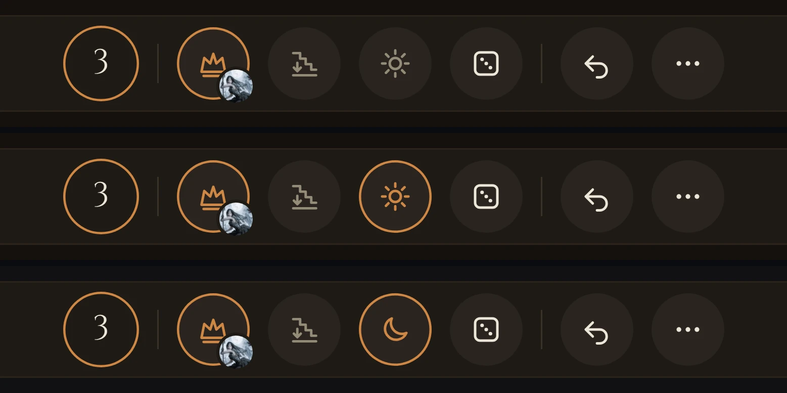
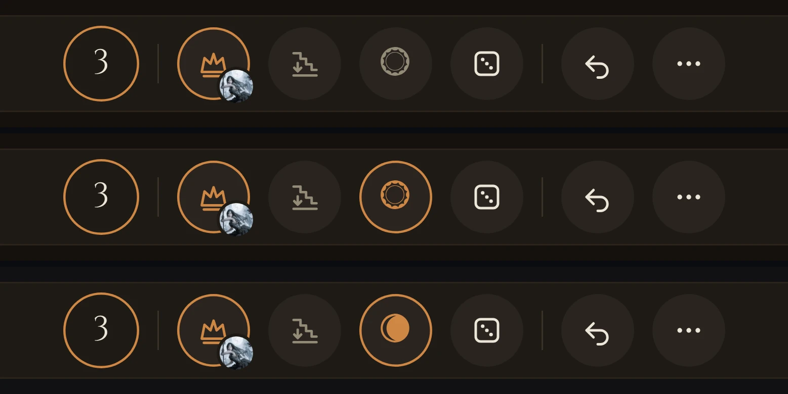
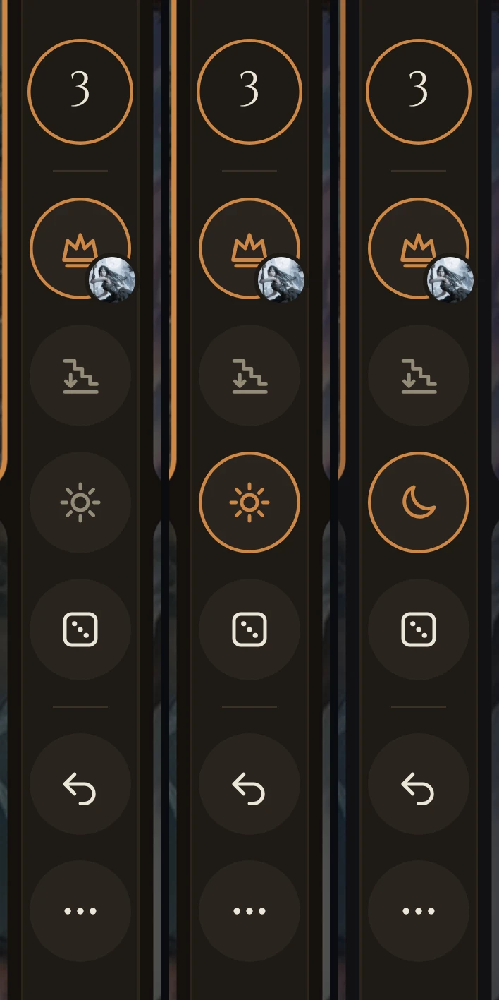
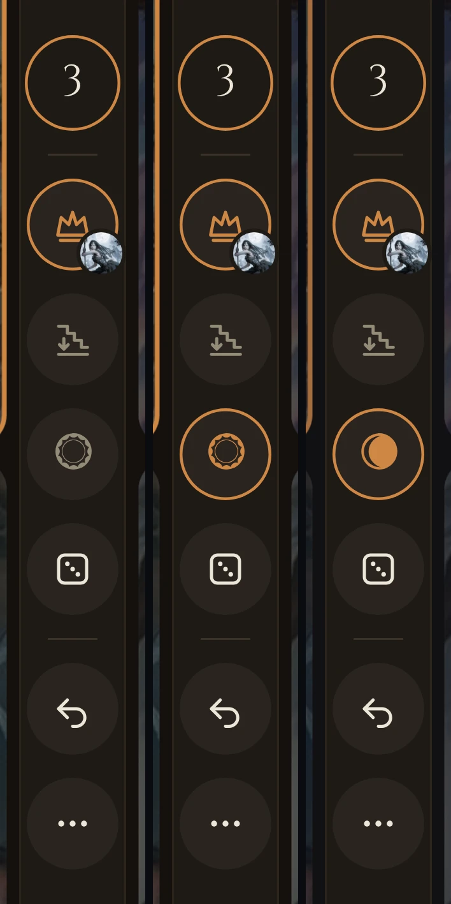

Hugh picked coin C (struck pips), so day and night stay off the coin. This board asks whether the spine's day/night button should take Magic's own day and night markers (the ones on the Midnight Hunt day/night card and on daybound and nightbound faces) in place of the shipped SunIcon and MoonIcon. Same button, same states, same colours: faint with the cycle off, accent and ringed by day or night. Only the glyph changes; it is drawn at 19px inside the 22px box so its filled weight sits level with the outlined icons beside it. Copy, motion (the shipped 320 ms swap) and reduced motion are unchanged.

Shipped · SunIcon and MoonIcon
Outlined like the rest of the strip. A generic sun and moon can read as a light/dark theme switch.

Proposed · Magic's day and night
The marker players see on their daybound and nightbound cards. Filled, so a touch heavier than its neighbours; night is the heaviest.

Shipped

Proposed
Holds up at phone size; the day ring's points stay distinct at 19px.
Build · If approved
icons.tsx as DayMarkIcon / NightMarkIcon (filled, viewBox 32, from mana-font's dfc-day / dfc-night); DayIcon in spine.tsx switches to them.SunIcon/MoonIcon only if something else uses them (today only the spine does).